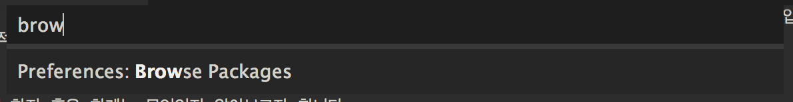
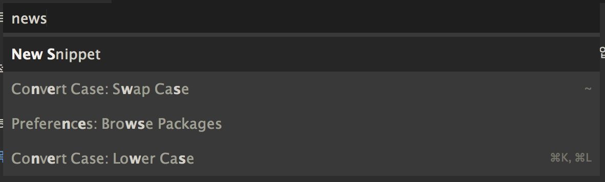

보통 스니핏(Snippet)이라고 하면 ‘코드조각’이라고 불리거나 혹은 재사용 가능한 짧은 코드를 의미하지만, 일반적인 텍스트 에디터에서는 정해진 단어를 입력해 사전에 입력된 코드들이 나타나도록 하는 기능을 의미합니다. 단순한 기능이지만 잘 활용하면 빠르고 정확한 텍스트를 입력할 수 있으며, 심지어 기억력을 보강해주는 효과도 있습니다.
하지만 많은 개발자가 이 기능을 잘 사용하지 않습니다. 이 기능의 존재를 모르거나, 알더라도 사용하기 불편하기 때문입니다. 그래서 기본적으로 작성된 스니핏 혹은 기존에 누군가 작성한 것을 사용하는 것이 보통입니다.
이 글에서는 Sublime Text의 스니핏 기능이 얼마나 편리하게 사용할 수 있는지 보여줄 것이며, 스니핏으로 어떠한 기능까지 가능한지 혹은 한계는 무엇인지 알아보고자 합니다.
명령목록에 ‘New Snippet’ 등록하기
스니핏을 살펴보기 전에 명령목록에 ‘New Snippet’를 등록하면 매번 메뉴를 누르는 것 보다 더 편리하게 접근할 수 있습니다. 기본적으로는 등록되어 있지않으며, 메뉴에서는 [Tools] 가장 아래에 위치해 있습니다.
원하는 파일명을 정하고 확장자는 반드시 *.sublime-commands*로 해야 합니다. 저는 보통 daejin.sublime-commands로 합니다.
[
{ "caption": "New Snippet", "command": "new_snippet" }
]
위 파일(다음부터는 ‘명령목록 파일’이라고 부르고 싶네요.)을 생성 후 sublime text의 패키지 디렉토리로 이동시키면 명령목록에서 ‘New Snippet’사용이 가능해 집니다.
패지키 디렉토리로 가는 간단한 방법은 명령목록에서 ‘Preferences Browse Packages’를 선택하면 패키지 폴더가 나타나며, 여기에 위에서 작성한 파일을 옮겨 놓으면 됩니다.

짜잔! 이제 여러분도 명령목록에서 ‘New Snippet’ 사용하거나 혹은 여러분이 원하는 명령을 추가할 수 있게 되었네요. ^^
